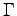

Next: 6.3 File space requirements
Up: 6 Performance issues (PWscf)
Previous: 6.1 CPU time requirements
Contents
A typical self-consistency or molecular-dynamics run requires a maximum
memory in the order of O double precision complex numbers, where
O = mMN + PN + pN1N2N3 + qNr1Nr2Nr3
with m, p, q = small factors; all other variables have the same meaning as
above. Note that if the  -
point only (q = 0) is used to sample the
Brillouin Zone, the value of N will be cut into half.
The memory required by the phonon code follows the same patterns, with
somewhat larger factors m, p, q .
Paolo Giannozzi
2009-07-19